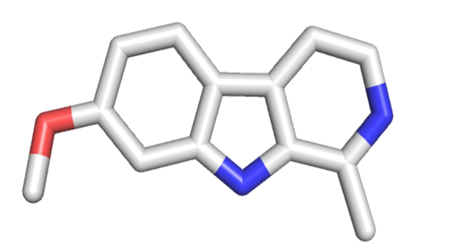

Our research lab uses a number of programs to perform in
silico screening assays (the testing of molecules with
a computer program). To do this, we first build a
model of a target protein using either known crystal
structures from NCBI or
using homology
models. We then create a virtual
library of molecules from either publicly available
databases (such as the ZINC
database) or using in-house software such as Spartan. Although
it is possible to test hundreds of millions of compounds, we
typically try to screen less than 10 million compounds in
order to keep the processing time reasonable. We
generally filter the large databases to more reasonable
numbers by selecting for smaller molecules and those with
good ADMET
properties. The programs we usually use to preform
these include Autodock,
Vina, and FRED.
Once the jobs are processed, the programs will indicate
which molecules are suspected to be potent. We then
will synthesize the compounds and test them in a living
system to see if the virtual screen results are
correct. When possible, we try to test several
programs with real biological data prior to beginning a
virtual screen to minimize false hits.
Collaborations
If you are looking for someone to run a structure-based
virtual screen, we're always interested in
collaborations! We specialize in testing for
commercially available compounds that can be purchased
and immediately tested in cellular assays, but we are
able to run other types of screens as well. A
typical docking library is 7-10 million compounds, and
our libraries can be tailored for a specific range of
properties (molecular weight, polar surface area, log P,
etc.). We do not do molecular dynamics or
ligand-based screens, sadly.
Ligand Libraries
Our group maintains a
collection of several in-house virtual libraries as
PDBQT files. Our most commonly used libraries
feature a collection of all drug-like, commercially
available molecules (updated annually). If you
would like a copy of our virtual libraries, please contact us.
Software
We use the following support software
most commonly:
Open Babel
Autodock Vina
Smina
iDock
ChimeraX
Cygwin (for a Windows machine)
Notepad++
ChemSketch
ACD NMR Processor
With the exception of the ACD NMR
processor, all of this is available as free open-source
software. Our lab is a big supporter of open-source
software, and we gratefully acknowledge the developers of
these programs. Most of these programs also have
excellent web resources for beginners. Our lab would
also like to thank ACD
labs for their generous donation of the NMR processing
software we use.
Preparing the Protein
Target
Our protocol
for preparing the protein target can be found in a PDF
document with step-by-step instructions here. Alternatively,
you can use the older python script from AutoDock, which you
can find info about here.
iDock Virtual Screening
We find
iDock to be the fastest free program out there and
highly recommend it for a quick job. It's also a
well-written program that can get maximum usage out of a
system. iDock can be downloaded here.
To
use run iDock, you'll need to create a directory with
the following items in it:
A PDBQT file of the protein target named
foo_DOCK.pdbqt (where "foo" is usually the PDB code)
The iDock program
A directory named Ligands that contains all of
the input ligand files in PDBQT format. All input
ligands must have a name beginning with the word
"ligand" like this: ligand02_1554.pdbqt.
These ligands also all need to have a "Name" in the
file. This is most commonly a ZINC ID code, or
something similar. Our script will look for this
to help reference the compounds later.
A proper configuration file called idock.conf with the ligand
folder, protein target, and coordinates set up. In
our example, we have placed all ligand files in a
directory called "Ligands," and our protein target is
called 2vt4_DOCK.pdbqt.
The configuration file above is set to use 6
cores and with default values. Time per ligand
can vary a lot based on system resources and the size
of input files, but iDock is very fast and most
ligands will be processed in less than a minute.
We have found little improvement by increasing the
default values based on a benchmarking study we did here.
Once everything is ready, simply execute the script
in the background and let the job run.
$ nohup ./screen_idock_v4.2.sh &
Once the script is running, it will create a new
directory called Results, then it will extract the "Name"
found in all input ligand files and compile them into a file
called IDs.txt. It will then begin docking all ligands
in the Ligands folder. Once all ligands have been
docked, it will then extract all the results, couple the ID
for each ligand to its best binding score, then sort the
results into a final summary file called
Summary_Final.txt. You can convert the output PDBQT
files into PDB files using Open Babel.
Vina Virtual Screening
Vina is a
slightly older program and somewhat slower than iDock, but
it's tried and true and available for Linux, PC and
Mac. We usually only use Vina if it gives results that
most closely match a known set of benchmarks. Vina can
be downloaded here.
We have designed our scripts so
that you can use the same type of input files and directory
structure, so you'll notice that the format is very similar
to our iDock procedure above. To run a virtual screen
with our Vina script, you'll need to have the following
things in the same directory:
A PDBQT file of the protein
target named foo_DOCK.pdbqt
The Vina program (which is contained in a
directory called Vina)
A directory named Ligands that
contains all of the input ligand files in PDBQT
format. All input ligands must be named with the
word "ligand" in front as with the iDock screen (e.g.
ligand02_1554.pdbqt).
A properly formatted conf.txt file for Vina to
read. An example is shown here.
Running timing tests are a good idea.
Generally, 6-12 CPUs are best depending on your
setup. Much larger numbers can actually make the
program slower.
We find the default settings with 10
conformations works well (see our example file above).
As mentioned before, we don't see much
improvement in docking accuracy when we increase the
exhaustiveness setting, so we leave it at the default.
Once you're ready, just execute the
script in the background with:
$ nohup ./screen_Vina_v4.2.sh &
Note that if you get a "permission
denied" message (which sometimes appears as a bad input
message on a PC or a cowardly statement claiming it can't
find the conf.txt), just use the chmod command and try
again:
$ chmod -R 775 ./
$ nohup ./screen_Vina_v4.2.sh &
Once the script begins running, it
will grab the "Name" entry from each ligand file as before
and place the compiled names in the IDs.txt file in a new
directory called Results (same as iDock). It will then
go through and check all input PDBQT files for problem lines
that can cause Vina to fail. This may take a few
minutes. The script will then dock each ligand in the
Ligands file. Once done, it will again extract the
best energies, rank them, and match them by "Name" in the
IDs.txt file. The final output file will be called
Summary_Final.txt. Output PDBQT files can be converted
to PDB files using Open Babel.
Smina Virtual Screening
Smina is a
fork of Vina that can be found here.
If you have no benchmarks to test different programs, we
have found that Smina works the best based on a benchmarking
study with the DUD-E database (link).
Sadly, Smina is only available for Linux systems. If
you want to run a Smina screen, then you can use our screen_Smina_v4.2.sh
script. Your input directory should be configured
exactly the same way as with Vina (with identical
configuration file format), with the only difference being
that you need to have the smina.static program instead of
the Vina program.
AutoDock Virtual Screening
We no longer use
AutoDock, as it's very slow and cannot thread.
Recent papers seem to make convincing cases that it
gives inferior performance to boot. Not a bad
program, but better things are out there.
Virtual Screening in the Classroom
If you are a
professor and are interested in teaching virtual
screening, it can be done! See our ChimeraX
student tutorial here
and our Vina docking tutorial here. By
using ChimeraX and Vina, students do not need to
purchase any software, and they can screen using a home
PC or Mac. Note that the instructor will need to
provide the PDBQT file, or teach students how to use
Open Babel. We use this tutorial in an
upper-division medicinal chemistry course where each
student is assigned a crystal structure with a bound
drug, then tasked with docking their own derivatives of
the drug in order to try to discover something more
"potent."
Ligand Based Screening Resources
We normally
only target proteins with known structures, so we have
little experience with ligand based screening
techniques. However, a number of open-source programs,
including installation and usage instructions, can be found
on the Insilab website here.
Thanks to Praveen
Kumar M for the suggested link.
MPiDock
The MPiDock
program is a program designed to run on networked
terminals with iDock and Vina. At the outermost
level, it consists of a scheduler, written as a command
line interface for crontab, which then calls the batcher,
which is a program that divides up input files and
executes commands remotely with those input files,
allowing parallelization across all terminals. The
program is freely available on GitHub here.
MPiDock was developed at Cal Poly by Dennis Li, Derek Nola
and Lucy Bowen (pictured below, left to right)